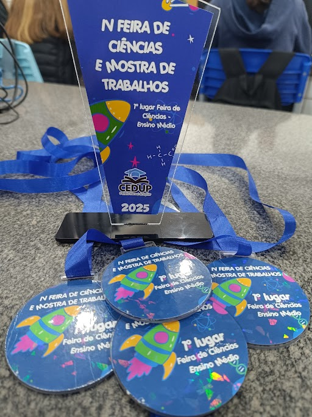
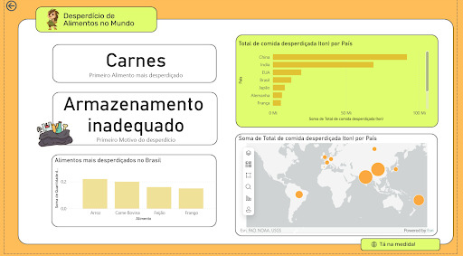
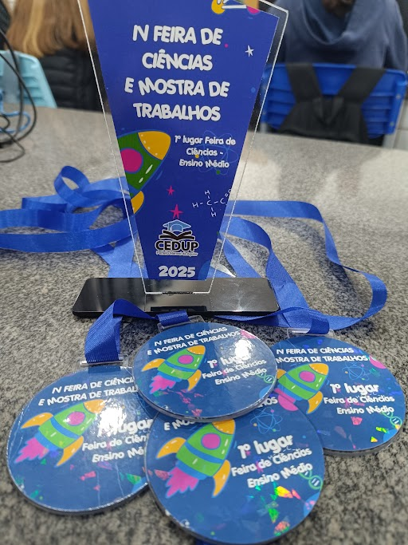
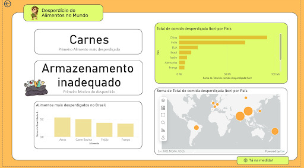

Tá na Medida
Sobre o Projeto
O Tá na Medida é um projeto de investigação sobre os hábitos alimentares dos alunos durante o recreio em escolas públicas. Foi desenvolvido por meio da coleta e análise de dados reais, com foco em compreender padrões de consumo e sugerir melhorias. O trabalho surgiu em maio de 2024, no evento Innovation Camp da Junior Achievement. O projeto inclui pesquisa, aplicação de questionários, organização das informações, produção de gráficos e relatórios, criação de um site e aplicativo — unindo prática e aprendizado em ciência de dados.
Objetivo
O projeto visa analisar os hábitos alimentares dos alunos durante o recreio em escolas públicas, promover a sustentabilidade no meio escolar, compreender padrões de consumo e estimular reflexões sobre a importância de uma alimentação equilibrada no ambiente escolar.
Etapas Realizadas
Até o momento, desenvolvemos o site e o aplicativo do projeto, cultivamos a horta na escola com a participação dos alunos e professores, e apresentamos o Tá na Medida em feiras e eventos para ampliar seu alcance.
Nosso App, Site e PDF
🌐 Site do Projeto:
Acessar site
📱 Aplicativo:
Ver aplicativo
📄 Projeto em PDF:
Visualizar PDF
📸 Fotos do Projeto
.jpg) 


